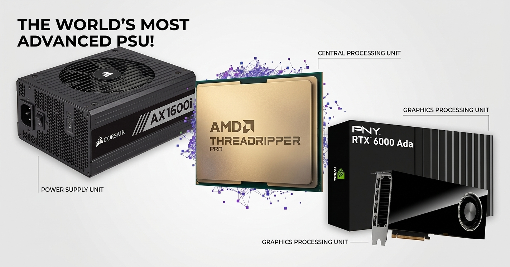
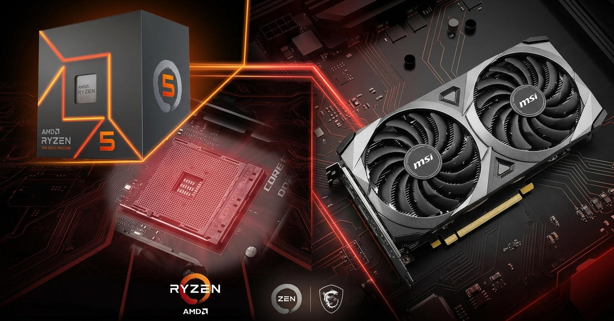

A continuación, se presentan dos enfoques de ingeniería para el perfil de Investigador en Alineación y Seguridad de IA: la capacidad absoluta sin límites, y la optimización estratégica de recursos dentro de un presupuesto ajustado.
Primero definí las tareas: ejecutar modelos pequeños, preparar preguntas de prueba y guardar resultados. Después revisé la memoria necesaria y la compatibilidad del software. Para comparar una estación profesional con una computadora doméstica, utilizo un presupuesto de referencia de 1200 USD, según la aclaración del profesor durante la reunión por Zoom. La consigna escrita menciona 800 USD como referencia inicial.
El presupuesto doméstico obliga a elegir prioridades. En esta alternativa dedico la mayor parte del coste a una RTX 3060 de 12 GB. Para mantener el total cerca de 1200 USD, uso un Ryzen 5 5500, 16 GB de RAM y un NVMe de 500 GB. No presento esta computadora como equivalente a la estación profesional ni como la única combinación posible.
Para mantenernos dentro del techo de ~1200 USD en el mercado argentino (verificado en tiendas locales, octubre 2026), aceptamos compromisos calculados:
La Bestia Absoluta (Sin restricciones)

Workstation Profesional Sin Límites: Threadripper PRO 7975WX + RTX 6000 Ada + Corsair AX1600i
Esta es una propuesta de diseño, no una computadora montada y probada. Antes de comprar, hay que confirmar la revisión de la placa, la versión de BIOS, la lista QVL de memoria y el espacio de los disipadores M.2.
Presupuesto Inteligente (~$1,189.95 USD en Argentina)

Workstation de Presupuesto Inteligente: Ryzen 5 5500 + ASUS Dual RTX 3060 V2 OC 12GB (nueva) + Gigabyte A520M
Diseñada para maximizar la VRAM dentro de un presupuesto estricto de ~1200 USD, priorizando una GPU nueva con garantía sobre un CPU de mayor gama[34].
| Componente | Modelo | ARS | USD | Fuente | |
|---|---|---|---|---|---|
| CPU y cooler | Ryzen 5 5500 BOX con Wraith Stealth | 173.965,90 | 111,52 | [C1] | |
| GPU nueva | ASUS Dual RTX 3060 V2 OC 12 GB | 945.678,00 | 606,20 | [C2] | |
| Placa madre | Gigabyte A520M K V2 | 88.711,06 | 56,87 | [C3] | |
| RAM | 2× Hiksemi Hiker 8 GB DDR4 3200 UDIMM | 274.466,20 | 175,94 | [C4] COMPROMISO | |
| SSD | Kingston NV3 SNV3S/500G 500 GB | 187.963,15 | 120,49 | [C5] COMPROMISO | |
| Fuente (PSU) | MSI MAG A650BN 650 W | 90.881,00 | 58,26 | [C6] | |
| Gabinete | Zer01 Orion con cuatro ventiladores | 54.657,91 | 35,04 | [C7] | |
| Subtotal | Solo componentes | 1.816.323,22 ARS | 1.164,31 USD | ||
| Reserva | Envíos y accesorios sin cotización cerrada | 40.000,00 ARS | 25,64 USD | ||
| TOTAL PREVISTO | Componentes más reserva | 1.856.323,22 ARS | 1.189,95 USD | Maximiza VRAM con componentes nuevos y garantía. | |
Las dos configuraciones responden al mismo perfil profesional, pero con recursos muy diferentes. La siguiente tabla resume las diferencias clave sin afirmar rendimientos no medidos:
| Criterio | Estación profesional | Configuración de estudio |
|---|---|---|
| VRAM | 48 GB | 12 GB |
| RAM | 256 GB ECC RDIMM | 16 GB DDR4 |
| Objetivo | Modelos cuantizados mayores y más tareas simultáneas | Aprendizaje con modelos pequeños y pocas tareas simultáneas |
| Límite principal | Formato, contexto y VRAM siguen importando | VRAM, RAM y capacidad del SSD |
| Rendimiento medido en este trabajo | No medido | No medido |
El Ryzen 5 5500 tiene seis núcleos y doce hilos. Su versión BOX incluye un Wraith Stealth. Utiliza AM4, DDR4 y PCIe 3.0. No tiene gráficos integrados, por lo que el monitor debe conectarse a la tarjeta gráfica. Estas características permiten reducir el coste, aunque la plataforma ofrece menos margen que una estación moderna de gama alta[33].
La ASUS Dual RTX 3060 V2 OC elegida tiene 12 GB GDDR6 y un conector de alimentación de ocho pines. ASUS indica una fuente recomendada de 650 W para su escenario de referencia, que incluye overclock. Elijo la MSI MAG A650BN de 650 W para respetar esa recomendación y disponer de margen. Esta potencia es la capacidad de la fuente, no el consumo medido del equipo[34], [37].
Los 12 GB de VRAM ofrecen más margen que una tarjeta de 8 GB. El objetivo principal son modelos de 7B–8B cuantizados y pruebas de tamaño moderado. Algunas versiones de 13B a 4 bits también pueden ser posibles, pero dependen del contexto, del programa y de la memoria adicional. No prometo que cualquier modelo de 13B funcione ni una velocidad fija de generación.
La placa A520M K V2 tiene dos ranuras de RAM. Con dos módulos de 8 GB se utiliza doble canal, pero una ampliación a 32 GB requiere sustituir los módulos. Su ranura principal para GPU es PCIe 3.0 x16 y su único M.2 trabaja hasta PCIe 3.0 x4. Aunque la GPU y el SSD admiten PCIe 4.0, en esta plataforma usarán PCIe 3.0. Hay que confirmar la revisión recibida y su soporte de CPU[35], [36].
El Kingston NV3 elegido es el modelo SNV3S/500G de 500 GB y formato M.2 2280. Kingston declara hasta 5000 MB/s de lectura y 3000 MB/s de escritura en una plataforma PCIe 4.0 adecuada. La combinación Ryzen 5 5500 y A520 limita el enlace a PCIe 3.0 x4, por lo que no atribuyo a esta computadora una lectura real de 5000 MB/s. Los 500 GB también obligan a controlar el número de modelos guardados[38].
El gabinete y sus cuatro ventiladores se describen según la ficha del vendedor. No dispongo de una ficha técnica oficial independiente para verificar todos sus detalles. Antes del montaje hay que confirmar espacio, tornillos, conectores y control de ventiladores. La tarjeta ASUS mide 200 mm de largo según su fabricante[34], [C7].
Representación visual de la interconexión física y de buses de datos de la configuración de presupuesto inteligente. Nota: Esta configuración utiliza PCIe 3.0.
Esquema simplificado de la alternativa con Ryzen 5 5500. Los datos y la alimentación se muestran con colores diferentes. El NVMe recibe alimentación desde el conector M.2 de la placa y no necesita un cable de alimentación SATA. GPU y SSD funcionan con PCIe 3.0 por los límites de esta plataforma. Los ventiladores del gabinete deben conectarse según sus conectores y controlador[34], [35], [37], [38].
La primera mejora depende del problema observado:
No fijo precios futuros porque no los conozco.
Resumen visual de por qué esta configuración es la elección óptima para un investigador académico con recursos limitados en Argentina.
Capacidad real para ejecutar LLMs de 7B/8B parámetros cuantizados localmente sin errores OOM.
Todos los componentes nuevos con garantía de 1-3 años. Sin riesgos de hardware usado.
Capacidad mínima viable para mantener el SO, contenedores Docker y buffers de datos de modelos pequeños.
Kingston NV3 SNV3S/500G. Velocidad limitada a PCIe 3.0 x4 por la plataforma. Suficiente para sistema + modelos de 7B-8B parámetros.
Incluye reserva de 40.000 ARS. No incluye cotización de envío. Precio por transferencia con impuestos.